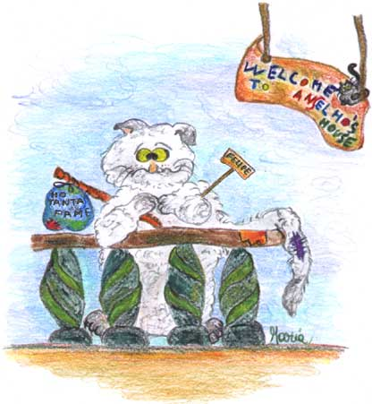

L’incontro di Anselmo e Felipe
ovverosia
come il Mite, dal suo eremo, percepisce il tormento di un’anima smarrita e col suo vincastro la riporta sulla retta via
Avea organizzato, Anselmo lo spretato, per i gatti meno abbienti
Senza visto e documenti, sopra un vecchio scendiletto
Un giaciglio sopra il tetto.
Accoglieva quel pio, gatti disadattati, negletti, abbandonati
Alcuni rattoppati, altri rei di frode a lui davano lode
Egli per ricambiare a tutti alzava un'ode.
Offriva loro un pasto, briciole impolverate
E scatolette vecchie scadute e rileccate.
Brillava il generoso dal cuore gaudioso
Mentre una zampa dava con l'altra riprendeva.
Era suo l'adagio, rimasto negli annali dei beati animali
“Figliolo mio sperduto non so come ti chiami
ma ho appena digerito… prova a passar domani!"
Accorrevano i miseri dai lontani bidoni
Richiamati dall'eco di quei santi sermoni.
E nella casa-famiglia, non sto qui a precisare
Regnava il parapiglia, c'era sempre da fare.
Non si stancava mai di fare buone azioni
A chi offriva ricetto a chi dava lezioni
Insegnando il mestiere di oziare e di bere.
Senza punto chiedere a nessuno licenza
Organizzava giochi per far beneficenza.
Intanto la sua fama dilagava, a niuno una zampata lesinava.
Ma un misero sbarcato non si sa da quale lato
Da un po', mesto sbirciava nel giardino del mite
Mentre questo gustava due trotine condite.

Felipe era il suo nome e pare fosse un tempo
Un nobile barone cialtrone e lazzarone
Con il vizio del gioco, rovinatosi alfine
Per una grigia micia, per la quale perse perfino la camicia.
Ma dopo una crisi mistica di rogne e di pidocchi
Il mondo lui guardava con nuovi e puri occhi.
Bello come un Adone scrutava ed annusava spruzzando ogni portone.
Sbirciava la gente fra le serrande,
spiava le gatte in wonderbra e mutande.
Dannato e gaudente come un fringuello
E non sapendo come campare, cercava un posto per riposare.
Intanto il mite ignaro sulla sdraio riposava
Pregando pei randagi russava e bofonchiava.
Nella sua mente pii pensieri di seppioline e calamari
Nel dormiveglia già farfugliava e buone azioni desiava e sognava.
E agogna un'occasione per fare penitenza
Mentre Felipe quatto, s'avvia sulla credenza.
Mentre il misero un'aringa adocchiava,
il giusto, aperto un occhio lo puntava.
Avendo egli interrotto di botto l'orazione
Il Vespro e il Mattutino per colpa del fellone
Decide il santo Anselmo di dare una lezione
Di sobrio catechismo al vecchio fannullone.
E gli tende un agguato a baffi e coda bassa
Mentre quello beato slinguazzava la salsa.
Gli piomba sul groppone e col libro dei salmi
Gli percuote la panza, alzando un polverone
E nel frattempo intona un sermone
mentre il dannato rapisce un salmone.
Un canto gregoriano lieve s'alzava
E dai cortili la gente s'affacciava.
Un professore di greco e di latino
Trascrisse la quartina, bevendo un po' di vino.
Quartina che divenne un coro vario e ancora si gorgheggia in seminario.
Alfine un sacro colpo di vincastro
Anselmo dona in pace a quell'impiastro.
Ma dopo tante botte… lieve scende la notte
E gli animi un poco più sereni siedono intorno al desco
Attorno a un barbecau di pesce fresco.
Anselmo lo spretato e Felipe il convertito
Si stringono la zampa… con parecchio appetito!
Perché di notte… si sa… tutti i gatti son bigi
Ladri, predicatori, furfanti e gatte attrici.
A tutti un bocconcino è lor dovuto
E detto questo…
M'inchino e vi saluto.
M.J.M luglio 2002

Anselmo: il mite gatto pellegrino col vincastro. Il suo motto è:
“Pregare, oziare, digerire, forse”
Felipe: il reietto vagabondo; un tempo bianco candido, adesso, senza offesa, il suo colore si può definire “variegato che declina sul topo”.
Glossario
Vincastro: bastone nodoso tipico dei pellegrini.
Avea: licenza poetica, sta per “aveva”
Wonderbra: regiseno per gatte umane e non, che tira su… il davanzale.
Casa-famiglia: luogo d'accoglienza gestito da Anselmo dove ognuno fa i comodi suoi.
Slinguazzava: tipico termine del gergo felino, può significare “rileccava avidamente qualcosa già mangiato in precedenza”.
Panza: sta per “pancia”, termine tipico dei trovatori siciliani medievali.